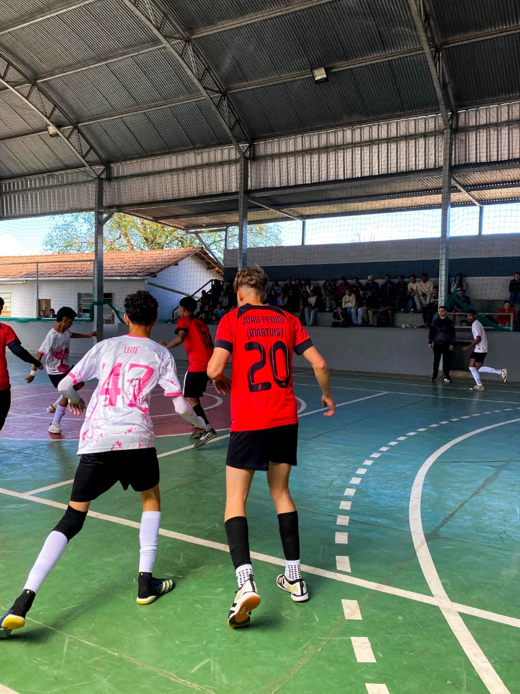
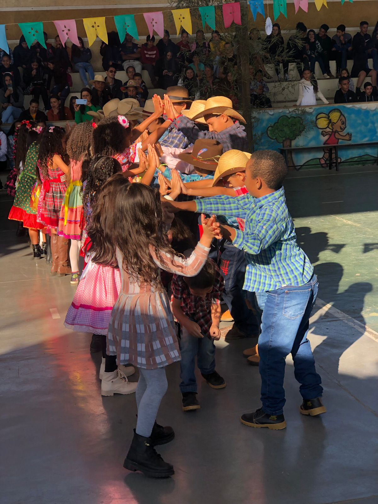

Projeto Literário
Um projeto literário é uma ferramenta poderosa para despertar o prazer da leitura nos alunos, transformando
um
ato que pode parecer obrigatório em uma aventura cheia de descobertas.
Além disso, projetos literários estimulam o debate e a troca de ideias.
Os alunos aprendem a expressar
suas
opiniões, a ouvir com atenção e a construir argumentos sólidos, habilidades essenciais não apenas na vida
acadêmica, mas em todas as relações sociais. Em essência, a literatura na escola não é apenas sobre o que se
lê,
mas sobre como a leitura nos transforma, preparando os jovens para serem cidadãos mais críticos, sensíveis e
comunicativos
Além da leitura, o projeto envolve atividades como rodas de conversa, dramatizações, produção de resenhas e
exposições, tornando o processo de aprendizado mais dinâmico e prazeroso.
Assim, o projeto contribui
para a
formação de leitores críticos e conscientes.
Jogos de interclasse
Os jogos de interclasse são um momento muito aguardado pelos alunos, pois unem esporte, diversão e espírito
de
equipe.
Organizados pela escola, esses jogos promovem a integração entre as turmas, estimulando valores
como
respeito, cooperação e disciplina.
Durante as competições, os estudantes têm a oportunidade de
representar
suas classes em diferentes modalidades esportivas, como futebol, vôlei, xadrez e queimada.
Mais do que
vencer, o objetivo principal é incentivar a prática esportiva e fortalecer os laços entre os colegas,
tornando o
ambiente escolar mais saudável e participativo.

Quadrilha
A quadrilha escolar é uma das tradições mais animadas das festas juninas na escola.
Com trajes típicos,
músicas tradicionais e muita alegria, os alunos ensaiam e se apresentam para celebrar a cultura popular
brasileira.
A dança em grupo, cheia de coreografias divertidas e expressões como “olha a chuva!” e “é
mentira!”, promove a integração entre os estudantes e resgata elementos do folclore e das festas do
interior.
Além da quadrilha, a escola costuma se enfeitar com bandeirinhas coloridas e oferecer comidas
típicas, criando um ambiente festivo que valoriza nossas raízes culturais e o convívio entre toda a
comunidade
escolar.

Sonhos e projetos de vida
É um projeto desenvolvido no mês de Agosto, na semana da juventude destinada aos alunos do 1 ano do ensino
Medio
,que tem como objetivo principal desenvolver os alunos uma perpectiva de futuro desse sonho.
Durante uma
semana a escola promove palestras com profissionais de defender áreas e profissões que conversam com os
alunos
sobre suas formação e área de atuaçaõ.


7 de Setembro
O dia 7 de setembro é comemorado como o Dia da Independência do Brasil.
Esse evento marcou o fim do domínio colonial português e o início da construção de um país soberano. Todos
os
anos, o Brasil celebra o 7 de setembro com desfiles cívico-militares, cerimônias oficiais e diversas
atividades
que reforçam o sentimento de patriotismo e a importância da história nacional.
A escola Teodomiro realiza desfile no 7 de setembro para comemorar o Dia da Independência do Brasil e
reforçar o
pertencimento à nação entre os alunos.
O desfile é uma forma de homenagear a história do Brasil e lembrar a conquista da independência. Os desfiles
integram a escola com a comunidade, promovendo união e valorização da cultura nacional.
Como resultado os alunos aprendem sobre a importância da independência e os personagens envolvidos nesse
processo. Desenvolvem senso de responsabilidade, respeito pelos símbolos nacionais e valorização da
democracia
estimulando o orgulho de ser brasileiro e o sentimento de pertencimento ao país.
Assim, o desfile vai além de uma simples apresentação: é uma experiência educativa que une conhecimento,
prática
e cidadania.


Baile de Primavera
O baile da primavera acontece todos os anos no mês de setembro, que se dá o ínicio da primavera destinado aos
alunos dos anos inicias do ensino fundamental.
O evento busca promover a socialização e a integração
entre
as crianças por meio da arte, visa também estimular o respeito, o trabalho em equipe e a valorização da
natureza
com danças e diversão.
Semana das crianças
Acontece todos os anos no mês de outubro, com os alunos do 1 ao 5 ano e tem objetivo comemorar o dia das
crianças
proporcionando momentos de alegria e descontração com desenvolvimento de atividades a ludicas, culturais e
recreativas, buscando assim estimular a imaginação, a cratividade e o fortalecimento de viculo entre as
crianças.
Show de talentos
O Show de Talentos nas escolas tem o objetivo de valorizar as habilidades artísticas e pessoais dos alunos,
oferecendo um espaço para que eles se expressem de forma criativa.
Esse evento ajuda a desenvolver a
autoestima, a confiança e a descobrir talentos que muitas vezes ficam escondidos.
Além disso, promove o
respeito às diferenças e fortalece a convivência entre os estudantes.
Participar do show também estimula
a
criatividade, o trabalho em grupo e a motivação, tornando a escola um ambiente mais acolhedor e
divertido.
Assim, o Show de Talentos contribui para o crescimento emocional, social e cultural dos alunos.
Semana de educação para a vida
Acontece todos os anos no mês de novembro, com palestras, juri simulado, apresentações artísticas, para
promover
reflexões e aprendizagens que contribuam para o desenvolvimento integral dos estudantes, abordando temas
como
etica, cidadania, saúde emocional, respeito as diferenças.
Estimulando atitudes positivas que visam
preparar
o estudante para enfrentar os desafios da vida de forma responsável e solidária.
Feira de ciências
A Feira de Ciências é um evento organizado pela a escola com o objetivo de apresentar projetos científicos
desenvolvidos pelos alunos. Durante a feira, os estudantes expõem experiências, pesquisas e experimentos que
demonstram conceitos das áreas de ciências, tecnologia, meio ambiente, matemática e outras disciplinas.
Esse evento incentiva a curiosidade e a investigação científica, desenvolve o pensamento crítico e a
criatividade, e estimula a comunicação, o trabalho em equipe e o protagonismo dos alunos.
Em resumo, a Feira de Ciências é uma forma divertida, educativa e interativa de aprender ciência na prática,
promovendo uma educação mais envolvente e significativa.
Aula da saudade- 3° ano ensino médio
A Aula da Saudade é um momento especial promovido pela escola para marcar a despedida dos alunos do 3º ano do
Ensino Médio.
Mais do que uma simples aula, é uma homenagem cheia de emoção, memórias e gratidão.
Durante esse encontro, professores, funcionários e colegas relembram momentos vividos ao longo dos anos
escolares, celebrando as conquistas e aprendizados.
A escola promove a Aula da Saudade como forma de reconhecer a trajetória dos estudantes, valorizar os laços
construídos e proporcionar uma despedida afetiva antes do novo ciclo que se inicia. É um momento de rir,
chorar
e guardar no coração tudo o que foi vivido dentro da escola.